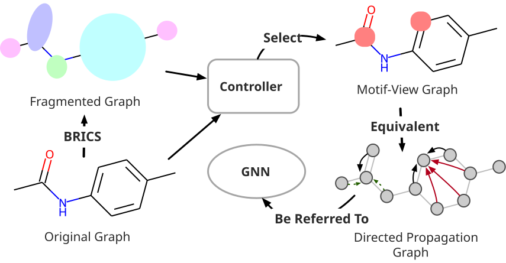

Wenhao Yu
Undergraduate
Beihang University
Haidian District
100191 Beijing, P.R. China
yuwenhao117@gmail.com, 1359906296@qq.com
Haidian District
100191 Beijing, P.R. China
yuwenhao117@gmail.com, 1359906296@qq.com
Welcome to My Homepage!
Welcome to the world of Wenhao Yu
I will writing Everything in this webpage, like my notes, publications, news and blogs.
I hope you find what you want here!
About Myself
- CV of Wenhao Yu(于文昊)
- (Pursuing) Bachelor’s Degree in Artificial Intelligence
- Institution: Beijing University of Aeronautics and Astronautics(BUAA, or Beihang University)
- Expected Graduation: 06/30/2024
- My Research Interests
- Graph Machine Learning
- AI4Anything, Like AI4Bio, AI4EDA, AI4Architechture
Let’s Connect!
I love engaging in meaningful conversations about various aspects of life, research, and anything else that piques curiosity. Feel free to reach out if you’d like to discuss:
- Everyday experiences and thoughts about life.
- Exciting developments in the world of research and academia.
- Creative projects, hobbies, or interests.
Let’s exchange ideas and explore the fascinating world around us!
Publications

Wenhao Yu,
MobaSSL: An Adaptive Graph Self-Supervised Learning Framework Emphasizing Functional Substructure
2023.
MobaSSL: An Adaptive Graph Self-Supervised Learning Framework Emphasizing Functional Substructure
2023.
This paper introduces a comprehensive GNNs-based Encoding Framework, designed to address these limitations by focusing on functional substructures within ubiquitous graph architectures. Specifically, we adopt the widely used fragmentation rule, BRICS, as our foundational approach to identifying functional motifs within molecular graphs. We propose a neural networks (NNs) based controller that enables node-wise adaptation of BRICS during the message-passing process of GNNs. The controller is further divided into two components： switchers and a decider, each fulfilling specific roles in transforming the meaning of each embedding layer and determining the subsequent layer. Extensive experiments conducted on various downstream benchmark tasks demonstrate that our framework consistently outperforms state-of-the-art baselines.